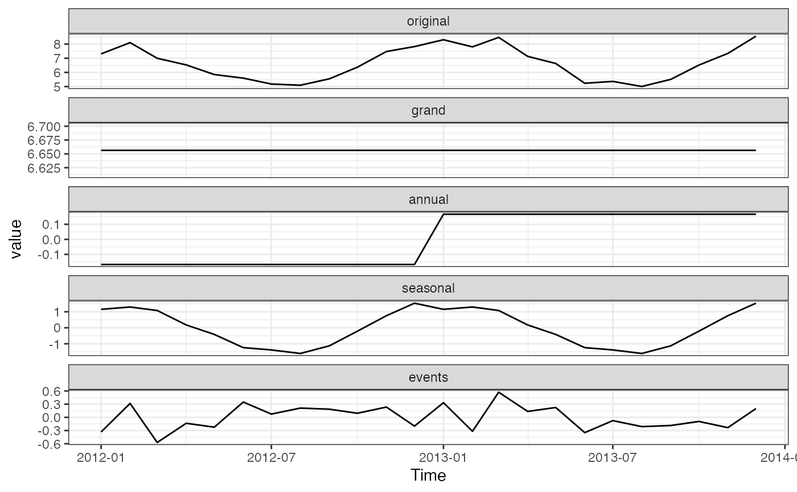
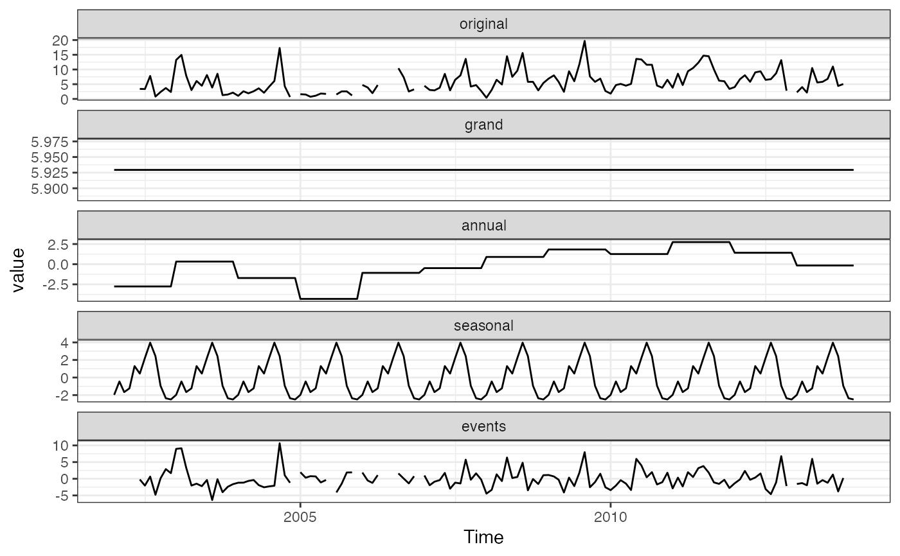

Decompose monthly SWMP time series into grandmean, annual, seasonal, and event series as described in Cloern and Jassby 2010.
decomp_cj(dat_in, ...) # S3 method for swmpr decomp_cj( dat_in, param, vals_out = FALSE, event = TRUE, type = c("add", "mult"), center = c("mean", "median"), ... ) # S3 method for default decomp_cj( dat_in, param, date_col, vals_out = FALSE, event = TRUE, type = c("add", "mult"), center = c("mean", "median"), ... )
Arguments
| dat_in | input data object |
|---|---|
| ... | additional arguments passed to or from other methods |
| param | chr string of variable to decompose |
| vals_out | logical indicating of numeric output is returned, default is |
| event | logical indicating if an 'events' component should be determined |
| type | chr string indicating the type of decomposition, either additive ( |
| center | chr string indicating the method of centering, either |
| date_col | chr string indicating the name of the date column which should be a date or POSIX object. |
Value
A ggplot object if vals_out = FALSE (default), otherwise a monthly time series matrix of class ts.
Details
This function is a simple wrapper to the decompTs function in the archived wq package, also described in Cloern and Jassby (2010). The function is similar to decomp.swmpr (which is a wrapper to decompose) with a few key differences. The decomp.swmpr function decomposes the time series into a trend, seasonal, and random components, whereas the current function decomposes into the grandmean, annual, seasonal, and events components. For both functions, the random or events components, respectively, can be considered anomalies that don't follow the trends in the remaining categories.
The decomp_cj function provides only a monthly decomposition, which is appropriate for characterizing relatively long-term trends. This approach is meant for nutrient data that are obtained on a monthly cycle. The function will also work with continuous water quality or weather data but note that the data are first aggregated on the monthly scale before decomposition. Use the decomp.swmpr function to decompose daily variation.
References
Cloern, J.E., Jassby, A.D. 2010. Patterns and scales of phytoplankton variability in estuarine-coastal ecosystems. Estuaries and Coasts. 33:230-241.
See also
Examples
## get data data(apacpnut) dat <- apacpnut dat <- qaqc(dat, qaqc_keep = NULL) ## decomposition of chl, values as data.frame decomp_cj(dat, param = 'chla_n', vals_out = TRUE)#> Time original grand annual seasonal events #> 1 2002-01-01 NA 5.929384 -2.7606342 -1.9742526 NA #> 2 2002-02-01 NA 5.929384 -2.7606342 -0.4467677 NA #> 3 2002-03-01 NA 5.929384 -2.7606342 -1.6590556 NA #> 4 2002-04-01 1.600000 5.929384 -2.7606342 -1.2348774 -0.33387263 #> 5 2002-05-01 NA 5.929384 -2.7606342 1.3020742 NA #> 6 2002-06-01 3.400000 5.929384 -2.7606342 0.4469690 -0.21571901 #> 7 2002-07-01 3.350000 5.929384 -2.7606342 2.2257409 -2.04449091 #> 8 2002-08-01 7.800000 5.929384 -2.7606342 3.9705393 0.66071070 #> 9 2002-09-01 0.800000 5.929384 -2.7606342 2.4315671 -4.80031708 #> 10 2002-10-01 2.350000 5.929384 -2.7606342 -0.9449885 0.12623848 #> 11 2002-11-01 3.700000 5.929384 -2.7606342 -2.3626582 2.89390823 #> 12 2002-12-01 2.350000 5.929384 -2.7606342 -2.4989527 1.68020265 #> 13 2003-01-01 13.243000 5.929384 0.3273658 -1.9742526 8.96050258 #> 14 2003-02-01 14.952000 5.929384 0.3273658 -0.4467677 9.14201773 #> 15 2003-03-01 7.903500 5.929384 0.3273658 -1.6590556 3.30580561 #> 16 2003-04-01 2.990000 5.929384 0.3273658 -1.2348774 -2.03187263 #> 17 2003-05-01 6.087500 5.929384 0.3273658 1.3020742 -1.47132424 #> 18 2003-06-01 4.485500 5.929384 0.3273658 0.4469690 -2.21821901 #> 19 2003-07-01 8.117000 5.929384 0.3273658 2.2257409 -0.36549091 #> 20 2003-08-01 3.845000 5.929384 0.3273658 3.9705393 -6.38228930 #> 21 2003-09-01 8.544000 5.929384 0.3273658 2.4315671 -0.14431708 #> 22 2003-10-01 1.282000 5.929384 0.3273658 -0.9449885 -4.02976152 #> 23 2003-11-01 1.495500 5.929384 0.3273658 -2.3626582 -2.39859177 #> 24 2003-12-01 2.136000 5.929384 0.3273658 -2.4989527 -1.62179735 #> 25 2004-01-01 1.050000 5.929384 -1.7157479 -1.9742526 -1.18938378 #> 26 2004-02-01 2.600000 5.929384 -1.7157479 -0.4467677 -1.16686863 #> 27 2004-03-01 1.900000 5.929384 -1.7157479 -1.6590556 -0.65458075 #> 28 2004-04-01 2.600000 5.929384 -1.7157479 -1.2348774 -0.37875900 #> 29 2004-05-01 3.600000 5.929384 -1.7157479 1.3020742 -1.91571061 #> 30 2004-06-01 2.100000 5.929384 -1.7157479 0.4469690 -2.56060537 #> 31 2004-07-01 4.150000 5.929384 -1.7157479 2.2257409 -2.28937727 #> 32 2004-08-01 6.100000 5.929384 -1.7157479 3.9705393 -2.08417566 #> 33 2004-09-01 17.300000 5.929384 -1.7157479 2.4315671 10.65479656 #> 34 2004-10-01 4.300000 5.929384 -1.7157479 -0.9449885 1.03135211 #> 35 2004-11-01 0.650000 5.929384 -1.7157479 -2.3626582 -1.20097813 #> 36 2004-12-01 NA 5.929384 -1.7157479 -2.4989527 NA #> 37 2005-01-01 1.600000 5.929384 -4.3051342 -1.9742526 1.95000258 #> 38 2005-02-01 1.495000 5.929384 -4.3051342 -0.4467677 0.31751773 #> 39 2005-03-01 0.740000 5.929384 -4.3051342 -1.6590556 0.77480561 #> 40 2005-04-01 1.090000 5.929384 -4.3051342 -1.2348774 0.70062737 #> 41 2005-05-01 1.825000 5.929384 -4.3051342 1.3020742 -1.10132424 #> 42 2005-06-01 1.705000 5.929384 -4.3051342 0.4469690 -0.36621901 #> 43 2005-07-01 NA 5.929384 -4.3051342 2.2257409 NA #> 44 2005-08-01 1.495000 5.929384 -4.3051342 3.9705393 -4.09978930 #> 45 2005-09-01 2.560000 5.929384 -4.3051342 2.4315671 -1.49581708 #> 46 2005-10-01 2.560000 5.929384 -4.3051342 -0.9449885 1.88073848 #> 47 2005-11-01 1.172500 5.929384 -4.3051342 -2.3626582 1.91090823 #> 48 2005-12-01 NA 5.929384 -4.3051342 -2.4989527 NA #> 49 2006-01-01 4.740000 5.929384 -1.0746967 -1.9742526 1.85956508 #> 50 2006-02-01 3.885000 5.929384 -1.0746967 -0.4467677 -0.52291977 #> 51 2006-03-01 1.960000 5.929384 -1.0746967 -1.6590556 -1.23563189 #> 52 2006-04-01 4.710000 5.929384 -1.0746967 -1.2348774 1.09018987 #> 53 2006-05-01 NA 5.929384 -1.0746967 1.3020742 NA #> 54 2006-06-01 NA 5.929384 -1.0746967 0.4469690 NA #> 55 2006-07-01 NA 5.929384 -1.0746967 2.2257409 NA #> 56 2006-08-01 10.425000 5.929384 -1.0746967 3.9705393 1.59977320 #> 57 2006-09-01 7.350000 5.929384 -1.0746967 2.4315671 0.06374542 #> 58 2006-10-01 2.520000 5.929384 -1.0746967 -0.9449885 -1.38969902 #> 59 2006-11-01 3.247500 5.929384 -1.0746967 -2.3626582 0.75547073 #> 60 2006-12-01 NA 5.929384 -1.0746967 -2.4989527 NA #> 61 2007-01-01 4.450000 5.929384 -0.4877176 -1.9742526 0.98258592 #> 62 2007-02-01 3.050000 5.929384 -0.4877176 -0.4467677 -1.94489893 #> 63 2007-03-01 2.900000 5.929384 -0.4877176 -1.6590556 -0.88261105 #> 64 2007-04-01 3.800000 5.929384 -0.4877176 -1.2348774 -0.40678930 #> 65 2007-05-01 8.500000 5.929384 -0.4877176 1.3020742 1.75625909 #> 66 2007-06-01 2.900000 5.929384 -0.4877176 0.4469690 -2.98863567 #> 67 2007-07-01 6.500000 5.929384 -0.4877176 2.2257409 -1.16740758 #> 68 2007-08-01 8.000000 5.929384 -0.4877176 3.9705393 -1.41220597 #> 69 2007-09-01 13.600000 5.929384 -0.4877176 2.4315671 5.72676626 #> 70 2007-10-01 4.200000 5.929384 -0.4877176 -0.9449885 -0.29667819 #> 71 2007-11-01 4.700000 5.929384 -0.4877176 -2.3626582 1.62099156 #> 72 2007-12-01 2.700000 5.929384 -0.4877176 -2.4989527 -0.24271402 #> 73 2008-01-01 0.400000 5.929384 0.9011713 -1.9742526 -4.45630297 #> 74 2008-02-01 3.066667 5.929384 0.9011713 -0.4467677 -3.31712115 #> 75 2008-03-01 6.500000 5.929384 0.9011713 -1.6590556 1.32850006 #> 76 2008-04-01 4.900000 5.929384 0.9011713 -1.2348774 -0.69567819 #> 77 2008-05-01 14.500000 5.929384 0.9011713 1.3020742 6.36737020 #> 78 2008-06-01 7.500000 5.929384 0.9011713 0.4469690 0.22247544 #> 79 2008-07-01 9.600000 5.929384 0.9011713 2.2257409 0.54370354 #> 80 2008-08-01 15.600000 5.929384 0.9011713 3.9705393 4.79890515 #> 81 2008-09-01 5.800000 5.929384 0.9011713 2.4315671 -3.46212263 #> 82 2008-10-01 5.800000 5.929384 0.9011713 -0.9449885 -0.08556708 #> 83 2008-11-01 2.900000 5.929384 0.9011713 -2.3626582 -1.56789733 #> 84 2008-12-01 5.400000 5.929384 0.9011713 -2.4989527 1.06839710 #> 85 2009-01-01 6.900000 5.929384 1.8233936 -1.9742526 1.12147480 #> 86 2009-02-01 8.000000 5.929384 1.8233936 -0.4467677 0.69398996 #> 87 2009-03-01 5.800000 5.929384 1.8233936 -1.6590556 -0.29372216 #> 88 2009-04-01 2.400000 5.929384 1.8233936 -1.2348774 -4.11790041 #> 89 2009-05-01 9.400000 5.929384 1.8233936 1.3020742 0.34514798 #> 90 2009-06-01 6.000000 5.929384 1.8233936 0.4469690 -2.19974679 #> 91 2009-07-01 11.800000 5.929384 1.8233936 2.2257409 1.82148131 #> 92 2009-08-01 19.700000 5.929384 1.8233936 3.9705393 7.97668292 #> 93 2009-09-01 7.633333 5.929384 1.8233936 2.4315671 -2.55101152 #> 94 2009-10-01 5.800000 5.929384 1.8233936 -0.9449885 -1.00778930 #> 95 2009-11-01 6.900000 5.929384 1.8233936 -2.3626582 1.50988045 #> 96 2009-12-01 2.700000 5.929384 1.8233936 -2.4989527 -2.55382513 #> 97 2010-01-01 1.800000 5.929384 1.2567269 -1.9742526 -3.41185853 #> 98 2010-02-01 4.700000 5.929384 1.2567269 -0.4467677 -2.03934338 #> 99 2010-03-01 5.100000 5.929384 1.2567269 -1.6590556 -0.42705550 #> 100 2010-04-01 4.500000 5.929384 1.2567269 -1.2348774 -1.45123374 #> 101 2010-05-01 5.100000 5.929384 1.2567269 1.3020742 -3.38818535 #> 102 2010-06-01 13.600000 5.929384 1.2567269 0.4469690 5.96691988 #> 103 2010-07-01 13.400000 5.929384 1.2567269 2.2257409 3.98814798 #> 104 2010-08-01 11.600000 5.929384 1.2567269 3.9705393 0.44334959 #> 105 2010-09-01 11.600000 5.929384 1.2567269 2.4315671 1.98232181 #> 106 2010-10-01 4.533333 5.929384 1.2567269 -0.9449885 -1.70778930 #> 107 2010-11-01 3.800000 5.929384 1.2567269 -2.3626582 -1.02345288 #> 108 2010-12-01 6.500000 5.929384 1.2567269 -2.4989527 1.81284154 #> 109 2011-01-01 3.800000 5.929384 2.7428380 -1.9742526 -2.89796964 #> 110 2011-02-01 8.566667 5.929384 2.7428380 -0.4467677 0.34121218 #> 111 2011-03-01 4.700000 5.929384 2.7428380 -1.6590556 -2.31316661 #> 112 2011-04-01 9.400000 5.929384 2.7428380 -1.2348774 1.96265515 #> 113 2011-05-01 10.500000 5.929384 2.7428380 1.3020742 0.52570354 #> 114 2011-06-01 12.300000 5.929384 2.7428380 0.4469690 3.18080877 #> 115 2011-07-01 14.700000 5.929384 2.7428380 2.2257409 3.80203687 #> 116 2011-08-01 14.500000 5.929384 2.7428380 3.9705393 1.85723848 #> 117 2011-09-01 10.000000 5.929384 2.7428380 2.4315671 -1.10378930 #> 118 2011-10-01 6.200000 5.929384 2.7428380 -0.9449885 -1.52723374 #> 119 2011-11-01 6.000000 5.929384 2.7428380 -2.3626582 -0.30956399 #> 120 2011-12-01 3.400000 5.929384 2.7428380 -2.4989527 -2.77326957 #> 121 2012-01-01 4.020000 5.929384 1.4189491 -1.9742526 -1.35408075 #> 122 2012-02-01 6.700000 5.929384 1.4189491 -0.4467677 -0.20156560 #> 123 2012-03-01 8.040000 5.929384 1.4189491 -1.6590556 2.35072228 #> 124 2012-04-01 5.810000 5.929384 1.4189491 -1.2348774 -0.30345597 #> 125 2012-05-01 9.013333 5.929384 1.4189491 1.3020742 0.36292576 #> 126 2012-06-01 9.380000 5.929384 1.4189491 0.4469690 1.58469766 #> 127 2012-07-01 6.480000 5.929384 1.4189491 2.2257409 -3.09407424 #> 128 2012-08-01 6.700000 5.929384 1.4189491 3.9705393 -4.61887263 #> 129 2012-09-01 8.710000 5.929384 1.4189491 2.4315671 -1.06990041 #> 130 2012-10-01 13.183333 5.929384 1.4189491 -0.9449885 6.77998848 #> 131 2012-11-01 2.795000 5.929384 1.4189491 -2.3626582 -2.19067510 #> 132 2012-12-01 NA 5.929384 1.4189491 -2.4989527 NA #> 133 2013-01-01 2.230000 5.929384 -0.1605963 -1.9742526 -1.56453530 #> 134 2013-02-01 4.020000 5.929384 -0.1605963 -0.4467677 -1.30202014 #> 135 2013-03-01 2.156667 5.929384 -0.1605963 -1.6590556 -1.95306560 #> 136 2013-04-01 10.500000 5.929384 -0.1605963 -1.2348774 5.96608949 #> 137 2013-05-01 5.590000 5.929384 -0.1605963 1.3020742 -1.48086212 #> 138 2013-06-01 5.810000 5.929384 -0.1605963 0.4469690 -0.40575689 #> 139 2013-07-01 6.800000 5.929384 -0.1605963 2.2257409 -1.19452879 #> 140 2013-08-01 11.000000 5.929384 -0.1605963 3.9705393 1.26067282 #> 141 2013-09-01 4.400000 5.929384 -0.1605963 2.4315671 -3.80035496 #> 142 2013-10-01 5.050000 5.929384 -0.1605963 -0.9449885 0.22620060 #> 143 2013-11-01 NA 5.929384 -0.1605963 -2.3626582 NA #> 144 2013-12-01 5.900000 5.929384 -0.1605963 -2.4989527 2.63016477## decomposition of chl, ggplot decomp_cj(dat, param = 'chla_n')#> Warning: Removed 6 row(s) containing missing values (geom_path).## decomposition changing arguments passed to decompTs decomp_cj(dat, param = 'chla_n', type = 'mult')#> Warning: Removed 6 row(s) containing missing values (geom_path).## monthly decomposition of continuous data data(apacpwq) dat2 <- qaqc(apacpwq) decomp_cj(dat2, param = 'do_mgl')## using the default method with a data frame dat <- data.frame(dat) decomp_cj(dat, param = 'chla_n', date_col = 'datetimestamp')#> Warning: Removed 6 row(s) containing missing values (geom_path).